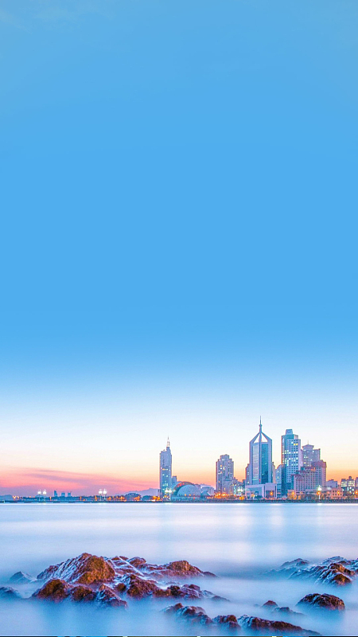
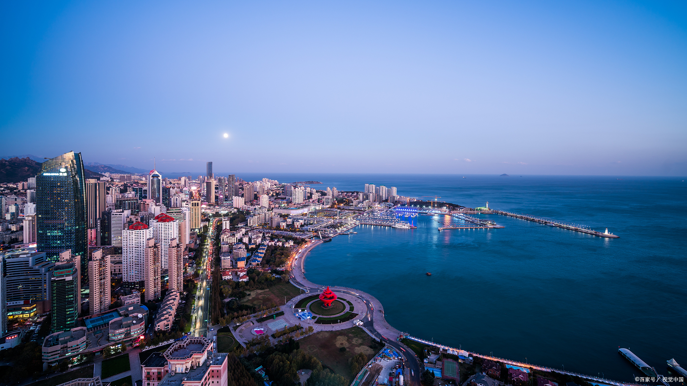

Introduction
从历史深处驶向蔚蓝未来
五四广场，因五四运动而得名。1919年，巴黎和会上将青岛主权转让给日本的消息传回国内，点燃了五四运动的烈火。为纪念这一划时代的历史事件，青岛市政府将新建的城市广场命名为「五四广场」。广场上高达30米的红色雕塑「五月的风」螺旋上升、如火如炬，象征着爱国精神与民族力量生生不息，是青岛最醒目的城市地标。
与五四广场相连的青岛奥帆中心，是2008年北京奥运会帆船比赛的举办地。碧海之上白帆点点，现代化的场馆建筑与大海完美融合。奥运会后，这里成为集运动、休闲、商业于一体的滨海度假区，也是青岛国际啤酒节的主会场之一。每年夏季，来自世界各地的帆船爱好者和游客汇聚于此，感受青岛「帆船之都」的独特魅力。
夜晚的五四广场与奥帆中心别有一番风情。夕阳西下时，广场上华灯初上，「五月的风」在灯光映照下格外夺目。奥帆中心的沿海建筑群点亮璀璨灯光，与海面上的倒影交相辉映。情人坝上的灯塔发出温暖光芒，整个海湾如梦如幻、流光溢彩。
Visitor Info
Gallery
光影海湾



Highlights
不可错过的体验
五四广场的标志性雕塑，高30米，直径27米，由中国著名雕塑家黄震设计。螺旋上升的红色造型象征「风」的力量与「火」的热情，表达了对五四精神的继承与发扬。广场正对市政府大楼，是青岛城市形象的代表。
2008年北京奥运会帆船比赛场地，拥有世界一流的帆船赛事设施。主防波堤长534米，堤上矗立着奥运火炬塔。平时可以体验帆船出海、乘坐游艇观光，感受乘风破浪的快感。每年5月这里还会举办国际帆船周活动。
奥帆中心最浪漫的地方——一条深入海中的防波堤，尽头矗立着一座白色灯塔。傍晚时分，情侣们三三两两坐在坝上，看夕阳沉入海平面，听海浪轻拍堤岸。夜幕降临后，灯塔亮起暖黄色的光芒，整个海湾的灯光秀尽收眼底，是求婚和拍照的绝佳地点。
每晚19:00-21:00（夏季延长至22:00），五四广场周边的高楼大厦会上演绚丽多彩的灯光秀。灯光在建筑群间流动变幻，倒映在海面上流光溢彩。最佳观赏点位于五四广场中轴线，或情人坝回望海湾。
Tips
游玩建议
日落前1小时到情人坝，可以拍到金色夕阳下的灯塔剪影。天黑后拍摄城市灯光秀与海面倒影最为震撼。使用广角镜头从情人坝回拍奥帆中心，城市天际线尽收画面。
奥帆中心周边有大量海景餐厅和酒吧，既有高端海鲜餐厅也有平价小吃。推荐尝试海景露台用餐，边品尝海鲜边欣赏海湾夜景。五四广场地下有大型商业美食广场，选择丰富。
五四广场沿滨海步行道向东可直达奥帆中心（步行15分钟）。向西可连接第三海水浴场和八大关。建议安排傍晚前往，先逛五四广场，沿木栈道走到奥帆中心，在情人坝等候日落和灯光秀。
夏季夜晚游客密集，注意保管随身物品。海边风大，即使夏季夜晚也建议带一件外套。灯光秀受天气影响可能调整时间，建议提前查询当日安排。